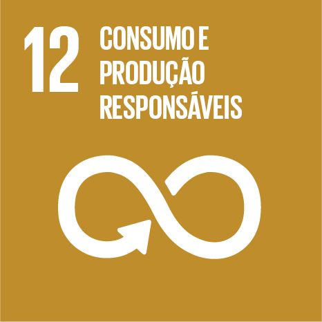

Objetivos de Desenvolvimento Sustentável
O que são as ODS?
As ODS são metas globais estabelecidas pela ONU para promover o desenvolvimento sustentável até 2030, abrangendo educação, economia, inclusão social e preservação ambiental.
ODS e a Crisomoeda
A Crisomoeda está alinhada aos ODS ao incentivar reciclagem, conscientização ambiental e valorização de resíduos, promovendo impacto social positivo e economia circular, inclusiva e sustentável.

Educação de Qualidade
Promover educação inclusiva, equitativa e de qualidade.
A Crisomoeda incentiva a educação ambiental e o desenvolvimento de consciência sustentável.

Trabalho Decente e Crescimento Econômico
Promover crescimento econômico sustentável e trabalho digno.
O projeto cria oportunidades de geração de renda por meio da reciclagem.

Redução das Desigualdades
Reduzir desigualdades sociais e econômicas.
A Crisomoeda permite inclusão social ao oferecer benefícios acessíveis a diferentes públicos.

Cidades e Comunidades Sustentáveis
Tornar cidades mais sustentáveis e resilientes.
O projeto contribui para a limpeza urbana e gestão adequada de resíduos.

Consumo e Produção Responsáveis
Garantir padrões sustentáveis de consumo e produção.
A Crisomoeda incentiva diretamente a reciclagem e o reaproveitamento de materiais.

Parcerias e Meios de Implementação
Fortalecer parcerias para o desenvolvimento sustentável.
O projeto integra parcerias com empresas, governos e comunidades locais.